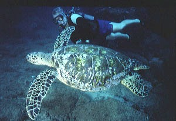
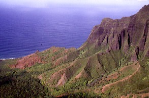
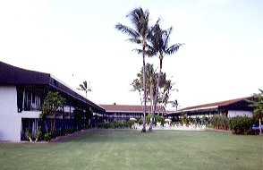
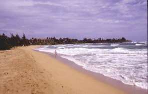
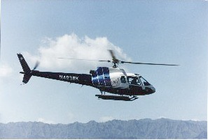
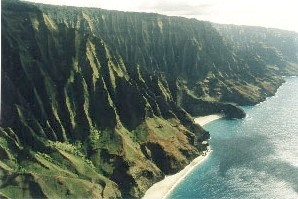

| Home / Dive Resorts / Live-Aboards / Snorkeling / Who We Are / Book a Trip |
© Copyright U.S. Dive Travel Network.
HAWAIIAN ISLANDS: KAUAI
KAUAI SANDS HOTEL PRICES (with optional rental car):
(Call us for seasonal "Fun in the Sun" specials, which change periodically throughout the year!)
EXCITING DAY DIVES:
$105 per diver
+ 6 % Hawaii tax for a 2-tank guided boat dive.
Sites are weather dependent -- North Shore or South Shore sectors of Kauai.
2-TANK NIGHT DIVES:
$105 per diver
+ tax, including light. Awesome critter activity! This night-diving package
is a "Twilight Combo." This is the best time of day to see exotic
ocean organisms in strange & beautiful behaviors that day divers never
get to see.
SNORKELERS:
$50 per person +
tax, when space on the 35-foot vessel permits.
[SPECIAL NI'IHAU ADVENTURE: June
through October each year.]
All-day Expedition Diving Trip to Niihau -- "The Forbidden Island"
--
3 tanks + lunch for $245 pp + tax. Niihau offers the finest adventure diving
in all of the Hawaiian chain. Few mainlanders or even local Hawaiians ever
get to visit this remote & mysterious island, a source of many legends
among Hawaiian people. Niihau diving is simply a privilege reserved only
for the hearty adventurer who has a lot of luck with weather. Niihau diving is
truly an inspiring, once-in-a-lifetime experience on the Forbidden Island.

Huge sea turtles abound off southern Kauai.
These protected Kauai turtles almost hug
you as they cavort around your dive sites.

Helicopter view of the inspiring Na Pali cliffs.
Photos below © U.S. Dive Travel Network.

Kauai Sands Hotel, best value 3-star lodging on
island, & Kauai's last Hawaiian-owned hotel.

One of best windward beaches on Kauai's surf-
blessed Eastern coast, not far from Kapa'a.

Ohana Helicopter Tours, Kauai's ace service.

Chopper view of Na Pali Coast, one of world's
most scenic hiking trails: 12 miles primo vistas.
Your Kauai Sands / Bubbles Below dive package includes: Lodging in Kapaa's top 4-star hotel (many superior rooms have ocean view from the lanai) + 2-tank boat diving days with Kenny & Linda Bail of Bubbles Below (Kauai's most respected scuba guides & marine biology experts). Sales tax is extra. The Kauai Sands Hotel is a clean & tidy place, where the staff treats you like ohana (family), the meals are filling & affordable, & the beach is one of the best & cleanest in Kapaa, & all of Kauai. The Kauai Sands Hotel belongs to a small chain of properties that are the last Hawaiian-family-owned hotels in all of Hawaii. The Kimi family are very special folks & we have really enjoyed working with them over the years. They know how to make a guest feel at home. The kind of integrity & Aloha Spirit that the Kimi family has shown to island guests for many years is one of Kauai's natural resources. You would love the peaceful getaway feel of the Kauai Sands Hotel. Give the good folks there a chance to show you the old-fashioned Hawaiian ways of releasing stress.
Your Bubbles Below / Niihau diving package includes: 3 tanks, weights + guides + lunch. Niihau diving is seriously weather dependant & must be arranged with expert care, since the Kaulakahi Channel between Kauai & Niihau can offer some awesome swells when the winds kick up from the North. But if you're one of the lucky few who hit the weather just right, this Forbidden Island of Niihau will offer you a scuba adventure you will remember for the rest of your life. This is one of the most coveted diving islands in the Pacific Region, a place imbued with wonder & history. Call us for any Hawaii diving details. We've been to Niihau; & it's left its mark on our souls.
For many decades Niihau (pronounced NEE-ee-how), about 17 miles off the southwest coast of Kauai, has been strictly off-limits to all interlopers. No person can set foot on remote Niihau without special permission, which rarely is granted by the island's owners. An aura of mystery surrounds this strange little island, because it is privately owned by the reclusive Robinson clan of Kauai, & because Niihau is the last pure sanctuary of native Hawaiian culture left in all of Hawaii, & likely in all of Polynesia. Some 200 or more native Hawaiians still live full-time on Niihau. They practice many of the old village customs, speak the ancient native tongue; & their family roots go back several centuries.
For all these reasons, plus the fact that there are only a few weeks each year when the winds & weather permit a safe crossing to Niihau, the scuba diving is ultra-virgin all over Niihau island. Among the best sites are in & around a half-moon-shaped volcanic crater, just north of Niihau's main island, called Lehua Rock. This volcanic croissant of Lehua Rock looms like a big brother of Maui's Molokini Crater. Then there are the windward east-side areas of Nenue Point, Stony River & Pueo Point; & also South Point -- other mysterious & outstandingly visual underwater playgrounds. This is the stuff of Hawaii scuba vacations that will really take you off the beaten path, oh Happy Bubblers ! Da kine Hawaiian Islands are da bess ting fo diving, yeah. You go'n see dat Forbidden Island, braddah. Hawaii diving ees mo beddah, yeh.
There are still acres of virgin Pacific reef to be explored around the rarely visited west-side leeward sectors of Nonopapa, Puuwai & Opaniau, on Niihau. Then there are some amazing spots that nobody will tell you about unless you visit Kauai for years & you win some savvy friends with a vessel fit for the crossing. We certainly will not give away those secrets; but you may learn some of them the first time you visit the wild island of Niihau, pearl of ancient Hawaii diving.
Among a special group of Hawaii diving enthusiasts, Niihau has become one of the most ardently coveted destinations in the greater Polynesian Triangle. Those of us blessed to dive these untainted reefs & wild walls believe that Niihau harbors the most beautiful diving secrets in all of Hawaii. Kenny & Linda Bail, owners of Bubbles Below dive tours, are the best guides we know out there on Kauai. They'll show you a day's adventure you'll probably be telling your kids & grand-kids about for years to come. Niihau reefs are a page from a century past, they are so free of the damage of human impact. These corals, caves & currents are a thrill combination that is tough to match with words. The Niihau diving experience is vibrant, a jazzed-up joyful ride to the Forbidden Island.
On some of their dives at Lehua Rock, in a little cove on the crater's South Face, Kenny & Linda Bail often have spotted Hawaiian monk seals, one of the world's rarest endangered marine mammals. Some scientists believe there are fewer than 1,000 monk seals left in the world. To see these sleek, playful creatures in a setting so virgin & remote is a moving experience. On other dives, Kenny & Linda will show you little bommies, caves, walls, niches & canyons off Niihau that harbor huge jacks, sleeping sharks, bandit angelfish, prowling hammerheads, mantas in their glorious underwater flight, furtive little octopi, & sometimes even a few magnificent eagle rays, humpback whales & dolphins if you're really blessed!
With a blend of awe & reverence, U.S. Dive Travel always seeks to under-promote its choicest dive destinations, so that they're more likely to stay as magical as they are today. No amount of corporate profit is worth the ruining of a sacred site. We call these one-in-a-million places like Niihau island our "power spots" & they are worthy of TLC protection. If Niihau is meant to be for you, you'll feel it in a special place well before you even call us to arrange this trip. We'll share a few secrets we've learned to help you make this trip safe, comfortable & rewarding. Niihau is an island that's not for everybody. No rookie divers will feel comfortable either on the channel crossing or underwater at Niihau. This awesome, life-enriching advanced Hawaii diving. This is Hawaii diving at its best. This is Hawaii diving the way you NEED to see it, to believe it. This is Hawaii diving 2 D max.
That is why we are truly happy that Niihau is protected from mass visitation by small vessels, because the swells, chop & currents in the Kaulakahi Channel are heavy much of the year, leaving a weather window only in about parts of June, then July, August & September, then a bit of October some years. Niihau diving sites remain the purest & most remote adventure diving destinations anywhere in the Hawaiian islands. It is a true Pacific gem. We were enchanted to the core by our Niihau diving; we are certain that you would be as well.
HOT TIP for a COOL SIDE TRIP
on KAUAI:
Ask about our breath-taking helicopter tours of the
magnificent Waimea Canyon, the volcano crater of Mount Waialeale with its
many quicksilver snake-thin waterfalls (rainiest place on Planet Earth!)
& the photographer's Mecca of the western Na Pali Coast, with its huge
colorful buttresses jutting skyward from trackless beaches. This Na Pali Coast Trail is one of the finest
eco-vacation trails in America. In fact, with its pristine rain forests still intact in most sectors, Kauai itself
is a prime undiscovered center for eco-travel. Once the eco-tourists discover this island, it will be tough to
find space in local hotels. We predict that eco-tourism will kindle this island some day, making it one of
the prime spots for dive vacations in Polynesia.
The Kauai chopper adventure is a wild & scenic ride of about 50 minutes, in a luxury jet-helicopter with an ace pilot-guide, plus ample windows for photos, & stereo headphones. It costs about $160 per person. Longer rides can be arranged for an extra fee. Bar none, this Kauai chopper cruise is the most grippingly beautiful aerial ride we have ever experienced anywhere in the world. On one of our Kauai tours a few years back, the pilot played "Chariots of Fire" over our headsets as we swooped at 150 mph over the sudden lip of a sheer thousand-foot cliff at seaside. That was some rockin' rich ride! We almost felt moved to tears by the grandeur of the moment.
Ken & Linda Bail's vessel, Kaimanu (Seabird), is a 35-by-9-foot Radon dive boat that's spacious, stable & speedy. Powered by two 200 HP Volvo Turbo Diesel engines, the Kaimanu can get to dive sites in a jiffy. Your Kauai diving & Kauai snorkeling guides depart from any one of half a dozen main boat landings all around Kauai, depending how winds, swells & currents are on any given day. The Bails know Kaimanu the way some folks know pets.
Because the Bails have extensive expertise in Hawaiian reef ecology, especially the peculiar underwater quirks that make Kauai diving special, they turn all dives into upbeat marine biology tours. The Bails also are crack underwater photographers; so if you share their passion for submarine E-6, you'll be in good company. These folks know how to add special touches to these Hawaii diving vacations. The Bubbles Below boat is very user friendly, with a private head, hot shower, shaded cuddy, ample gear stowage space & a freshwater camera-rinsing bin for those who baby their dear gear (ahem, like WE do!)
Because the Kauai diving packages offered by Bubbles Below give you Pacific dive adventures that are unique in the Hawaiian chain, & a lot more creative than the average Hawaii boat dive -- plus they never allow packed "cattle boats" -- their cancellation policy is strict. But it's fair & reasonable too. Kauai & Niihau are an outstanding off-the-beaten-path vacation combo. Combine your Bubbles Below Kauai diving or Kauai snorkeling experience with a chopper ride & a hike on the classic Na Pali Coast Trail, & you have a vacation that you'll be remembering with nostalgia for decades. Kauai no ka oi. Kauai, there's none other like it, as the ancient ones on Niihau would have said it best.
FOR MORE INFORMATION or RESERVATIONS:
Please feel free to contact:
John Hessburg, General Manager
Susan Hessburg, Operations Manager
U.S. DIVE TRAVEL Network
PMB 307 / Suite # 116
15050 Cedar Avenue S.
St. Paul, Minnesota 55124-7047
Voice Mail: 952-953-4124
E-mail: divetrip@bitstream.net
Website: www.usdivetravel.com
******************************************************
IMPORTANT REMINDER about PRICES & TARIFFS:
All prices for Hawaii scuba vacations or Kauai snorkeling trips listed here are subject to possible change in this steadily evolving travel market. Lodging, side tour & diving prices are traditionally stable, while air prices can fluctuate daily. Until air tickets are issued, all airlines reserve the right to change airfares without notice -- an industry standard per FAA rules. We at U.S. Dive Travel will price-protect you to the utmost of our professional ability; & that has been our pledge for one decade now. Our tropical vacation experts normally secure excellent wholesale discount air tickets for our clients who book early enough to secure limited seats in the best price categories. Remember please, the federal government has deregulated all U.S.-based airlines, so only they control their pricing -- not any travel professionals. Early is good when seeking the best air ticket rates.
Unless specifically noted, these above scuba diving packages are prices for only the land-based portion of the dive resorts, in most cases reflecting double-occupancy rooms. At many dive resorts, there will be no triple-occupancy rooms offered. Some exceptions will be noted. International air tickets & commuter "island-hopper" seats are always extra above these land costs. Nominal service fees are also extra for air tickets & the vessel + side tour components. The baseline tariffs for all clients start at $35 per person for the land portion + $20 pp for the air tickets. Late-booking clients may receive slightly higher tariffs on the lodging + diving at many of our dive resorts. Solo clients will always pay a single supplement to secure a private room -- normally 35% to 50% more than the standard double-occupancy rate at some dive resorts.
The preferred payment mode for all of our dive resorts, side tours & air ticket specials is by cashier's check or wire transfer in U.S. dollars. All clients living outside the USA or Canada will need to pay for their Kauai snorkeling & Kauai divin vacations via direct wire transfer only. No personal checks or credit cards will be accepted for the land portion of any Kauai snorkeling or Kauai diving reservation. Thank you for your gracious understanding. Our service level is the highest & our prices the lowest in this industry, & thus we need to preserve a reasonable margin. For published-fare air ticket bookings on any Kauai snorkeling or Kauai diving trip, USDT always accepts Visa & Mastercard. For ultra-discount wholesale air tickets, USDT accepts only cashier's checks or wire transfers, please.
We hope this article has helped you organize your plans for Kauai diving, Kauai snorkeling, Kauai scuba diving, Kauai vacation, Kauai resorts, or the Kauai Sands Hotel, Bubbles Below, Bubbles Below Diving, Hawaii diving. If that's the case, & you wish to receive more info about any of these topics -- Kauai diving, Kauai snorkeling, Kauai scuba diving, Kauai vacation, Kauai resorts, Kauai Sands, Bubbles Below, Bubbles Below Diving, Hawaii diving -- please feel free to call us any time. We would like to serve as your clearinghouse for information regarding Kauai diving, Kauai snorkeling, Kauai scuba diving, Kauai vacation, Kauai resorts, Kauai Sands Hotel, Bubbles Below, Bubbles Below Diving, Hawaii diving.
Remember, some Hawaii diving clients & all tropical vacation clients to all foreign destinations may be asked by local officials overseas, upon departing the airport on your final day, to pay a nominal government departure tax, usually between USD $25 - $40 per client. USDT cannot collect this tax beforehand, so you simply pay it down there, in your host country. Be sure to stash away a little cash for this final moment at the airport, so you'll get your exit visa stamped quickly with no fuss; & away you go. Best of luck with your dive travel plans. We hope your scuba diving vacation is a safe, serene & satisfying adventure. Blessings & best wishes with ALL your Hawaii dive vacations.
Best fishes too!
>////*> <*\\\\<
John Hessburg & Susan Hessburg, Mgrs.
U.S. Dive Travel Network.
| Home / Dive Resorts / Live-Aboards / Snorkeling / Who We Are / Book a Trip |
© Copyright U.S. Dive Travel Network.